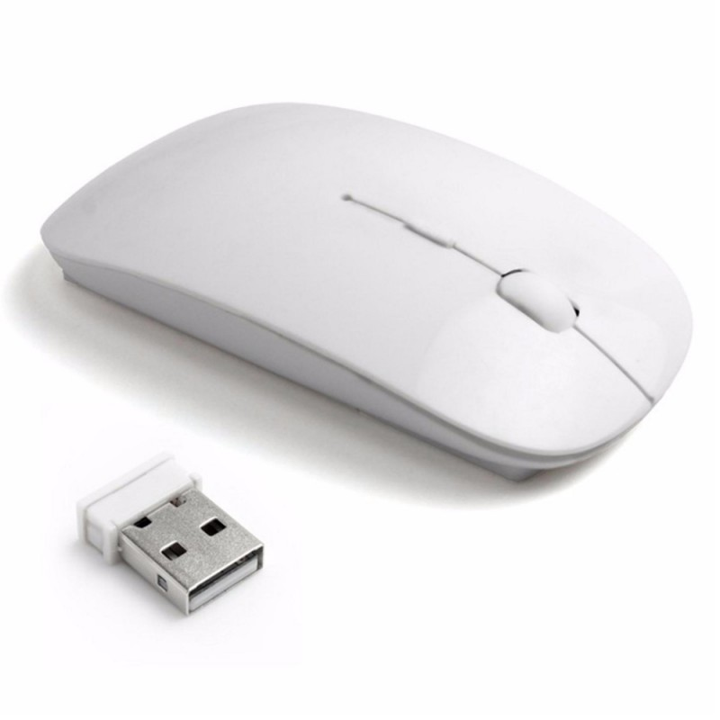

Como señalamos anteriormente, el mouse o ratón es un dispositivo de entrada para ingresar órdenes a la computadora, está usualmente diseñado con dos botones: el izquierdo sirve para ejecutar acciones de activar, desplazar y acceder, entre otras; el botón derecho se utiliza principalmente como atajo a menús.
